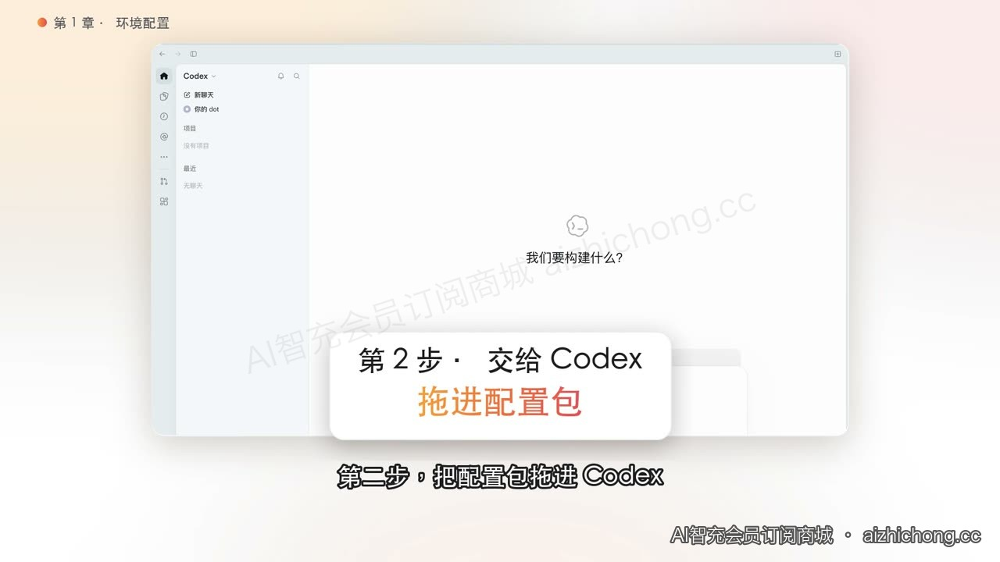
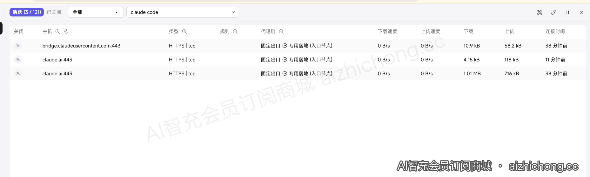
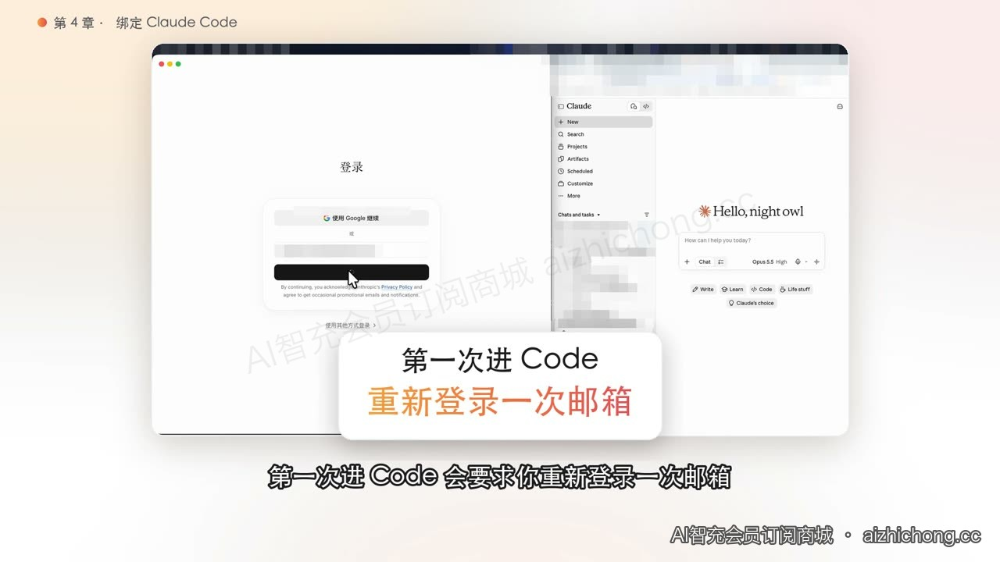
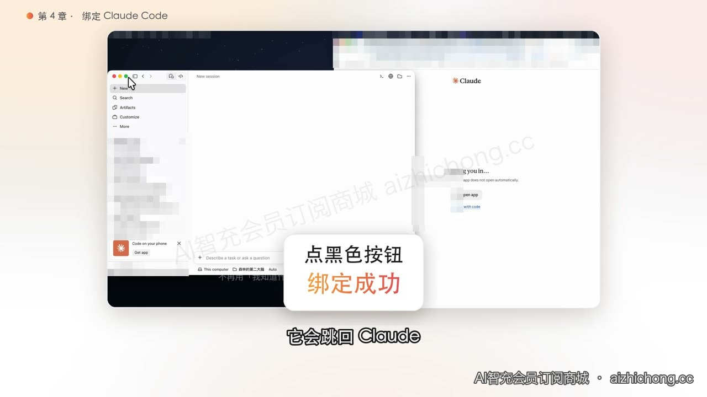

阶段三 · 第 8 步先配置桌面端网络
视频演示 · 环境配置：安装、导入与连接检查2:22
跟着原视频配置网络，再对照本步骤检查桌面程序的连接。
浏览器能打开 Claude，只说明那个浏览器能连接。桌面聊天、桌面 Code、CLI、VS Code 扩展，要分别验证。
8.1 先准备这几样
- 已经可以使用的 Claude 账号；准备使用 Code 时，确认当前账号有相应订阅权限。
- 你自己的可用网络。如果沿用森林的固定出口方案：准备入口订阅和专用落地的主机、端口、用户名、密码。
- 沿用旧教程的配置包与 Clash Mi；已有能用的网络，可先做后面的逐端验收，不必重复购买。
8.2 按自己的系统安装和导入
Mac：按这个顺序做
- 从官方 Releases 找 macOS 安装包，打开后按安装器提示安装。
- 解压配置包，先读《先读我》和《Clash Mi 使用说明书》。
- 按说明将自己的连接资料填入配置模板，导入 Clash Mi 并选择该配置，连接入口与专用落地。
- 需要桌面应用流量接管时，按包内说明配置 TUN，并由本人处理 macOS 的相关授权提示。
- 退出并重新打开 Claude；进入下方逐端验收。
Windows：按这个顺序做
- 在“设置 → 系统 → 系统信息/关于”确认设备架构，再从官方 Releases 选择对应 Windows 安装包。
- 安装并打开 Clash Mi，解压同一配置包，按《先读我》填写自己的模板并导入。
- 配置连接和桌面流量接管时，按 Windows 上实际出现的服务、网卡和权限提示处理。
- 重新打开 Claude、终端和 VS Code；按下面清单分别验收。Mac 的授权弹窗不代表 Windows 也长一样。
本页既有截图来自原实操；Windows 的完整安装弹窗尚未补拍，文字说明按 Windows 分开列出。
不会填配置？复制这段给 Codex 协助
请根据这个本地配置包，协助我检查并配置 Claude 桌面聊天、桌面 Code、终端 CLI 和 VS Code 扩展的网络。先识别系统与现有配置，保留我选定的入口和出口。连接资料从我指定的本地文件读取，不打印密码。修改前备份；分别验证实际请求与退出重开后的状态。只报告实测通过的项目，未测试项目明确写未测。
连接资料保存在你自己的电脑上，给出本地文件路径；不要把密码和订阅链接放到公开截图里。

原教程：配置包与资料准备位置 · 已有实操截图 · 点击放大8.3 先检查配置，安装后逐端验收
- 查看 Clash Mi 当前配置和监听端口。本教程配置包示例使用
127.0.0.1:17903，先确认端口确实存在；其他配置不能直接照抄。 - 尚未安装桌面版，先到第 9 步安装登录；之后在要使用的入口发送一个简单任务，再回 Clash Mi「连接」页搜索 claude，核对这一条请求的代理链。
- 如果采用固定出口方案，核对请求是否走预期落地。检测网站只能说明运行检测的那个客户端，不替代其他程序的请求证据。
- 配置变更后退出重开，再做一次实际请求。浏览器、桌面 Chat、桌面 Code、CLI、VS Code 分别记结果。

原教程：在连接页查看实际代理链 · 已有实操截图 · 点击放大Claude Code 的代理配置可通过受支持的环境变量或设置文件提供；运行中的进程不一定自动读到新配置。系统代理、TUN 和终端变量的作用范围不同，不要把一个入口成功说成所有入口都成功。
网络暂时不通时，记下系统、入口、错误提示、监听端口和代理链，回配置步骤排查；不反复更换账号登录。
来源：Claude Code 网络配置 · 2026-11-05 核对。
✓ 完成标志：网络配置和监听端口已准备。还没安装桌面版的先继续第 9 步，实际桌面请求在登录后验收；CLI / VS Code 在第 10 步分别验收。
阶段三 · 第 9 步安装并登录 Claude 桌面版
视频演示 · 登录授权参考：邮箱登录与返回 App0:27
这段演示 Code 的登录授权，可对照邮箱登录和返回 App 的操作。片中等待时间属于团子实测经验；桌面版下载、安装与 Chat 首次对话仍按本步骤图文完成。
先完成桌面聊天，再选择是否用 Code。免费账号可以使用桌面 Chat；Code 按当前订阅权限开放。
9.1 从官网下载安装
打开 Claude 官方下载页 ↗- Mac：选择 macOS；Windows：选择自己的 x64 或 ARM64 版本。不要把 VS Code 扩展当作桌面 App 安装包。
- 下载后打开安装文件，按安装器提示完成。Mac 从“应用程序”打开 Claude；Windows 从开始菜单打开。
9.2 用同一个 Claude 账号登录
- 保持第 8 步的网络已连接。打开 Claude，点击登录，选择自己原来的邮箱/登录方式。
- 浏览器出现授权页时，核对登录的是已经使用的那个账号。需要邮件时，去该邮箱打开本次登录邮件。
- 完成页面提示后允许回到 Claude App；不要停在浏览器里的“成功”提示就以为桌面端已完成。
- 回 App，核对账户邮箱。进入 Chat，发送“请用一句中文介绍你能帮我做什么”，确认收到回复。
- 回 Clash Mi 的连接页查看刚才桌面聊天的请求，按第 8 步的规则确认代理链。确认这一端实际能用后，再继续 Code。
如授权后回不来：回到 App 重新发起一次登录，核对浏览器账号和系统打开 Claude 的提示。网页版正常但 App 连不上时，回第 8 步检查桌面请求。
来源：Claude Desktop 安装说明 · 2026-11-05 核对。
✓ 完成标志：Claude App 中账号正确，Chat 已收到第一条回复。
阶段四 · 第 10 步安装 Claude Code，完成第一个任务
视频演示 · 桌面 Code：登录、授权并发出第一句话0:27
视频演示桌面 Code 入口，片中等待时间属于团子实测经验。CLI、VS Code 的安装，以及 hello.txt 练习任务，继续按本步骤对应图文完成。
三个入口共享基础账号准备，不需要三个都安装。第一次不熟悉终端，可先从桌面 Code 开始；平时写代码用 VS Code 的，可直接选择扩展。
三个入口共用的准备
- 同一个 Claude 账号，确认有当前 Code 所需权限；本教程走订阅账号登录，不默认走 API 充值。
- 新建一个空白文件夹
claude-first-task，只用于练习。 - 保持第 8 步的网络连接；完成任一入口后，对该入口单独验收一次实际请求。
A. 安装桌面版并进入 Code
先完成第 9 步：下载安装 Claude 桌面版。已经安装的直接继续下面的 Code 登录，不需要再安装独立 CLI。
- 在 Claude 侧栏顶部点 Code。只有图标时，鼠标悬停查看名称。看不到时先更新 App，并确认账号权限。
- 如要求再次登录，使用同一账号完成授权，回到 App。下面是原实操中的授权画面，当前界面文字可能不同。

原实操：进入 Code 后按提示登录 · 已有实操截图 · 点击放大
原实操：授权完成后回到 Claude · 已有实操截图 · 点击放大- 选择本地环境（Local），再点文件夹选择器 / Open folder，选择刚建立的 claude-first-task；旧版布局直接找文件夹入口。
- 粘贴下方练习任务并发送。文件修改或命令权限出现时，核对操作范围后再确认。
- 完成后用 Finder / 文件资源管理器打开 hello.txt，核对内容。
来源：Claude Code 桌面快速入门 · 2026-11-05 核对。
使用桌面 Code 不需要额外安装 Node.js 或独立 CLI。桌面 Chat 的一次回复不能当作 Code 任务已成功。
去复制练习任务 ↓B. 安装并登录 Claude Code CLI
Mac 打开“终端”；Windows 打开 PowerShell。安装命令来自官方，会下载并运行安装器；先核对网址。
Mac：安装命令
curl -fsSL https://claude.ai/install.sh | bash
Windows PowerShell：安装命令
irm https://claude.ai/install.ps1 | iex
这是 PowerShell 命令，不要粘到 CMD。Git for Windows 可提供 Bash 工具，当前官方将它列为推荐项。
- 安装结束后新开一个终端，输入下面的版本检查。出现版本号，才继续。
claude --version
- 输入
cd （后面有空格），再输入或拖入测试文件夹路径，回车进入目录。Windows 可在测试文件夹中右键打开终端。 - 输入
claude 并回车；首次按提示选择 Claude 订阅账号登录，在浏览器完成授权。 - 核对当前工作目录是测试文件夹，再发送练习任务；按提示确认允许的修改。
- 完成后打开 hello.txt 检查；在 CLI 输入
/status 可检查当前会话状态。
提示找不到 claude：先重开终端；仍不行时按官方安装排错检查 PATH，不要反复复制多种安装命令。
来源：Claude Code CLI 快速入门 · 2026-11-05 核对。
来源：Claude Code 系统要求与安装排错 · 2026-11-05 核对。
去复制练习任务 ↓C. 安装并登录 VS Code 官方扩展
- 打开 VS Code，在“文件 → 打开文件夹”选择 claude-first-task。
- 按 Mac 的 Cmd+Shift+X / Windows 的 Ctrl+Shift+X 打开扩展栏。搜索 Claude Code，核对发布者 Anthropic，再点击安装。
- 打开 Claude Code 面板；看不到时打开一个文件，找编辑器右上角的 Spark 图标，或在命令面板搜索 Claude Code。
- 点击 Sign in，在浏览器用同一个 Claude 账号完成授权，回到 VS Code。
- 在侧栏发练习任务，查看文件修改提示并确认。打开生成的 hello.txt 核对内容。
扩展自带供侧栏使用的 CLI，但不会把 claude 加到你的终端 PATH。想在 VS Code 的集成终端输入 claude，还需完成上面的独立 CLI 安装。
来源：Claude Code in VS Code · 2026-11-05 核对。
去复制练习任务 ↓同一个练习任务
在当前测试文件夹创建 hello.txt，内容为“我的第一个 Claude Code 任务”。只修改这个文件；完成后告诉我文件路径和内容。
✓ 完成标志：所选入口在测试文件夹创建了 hello.txt，实际打开后内容正确；该入口的请求连接正常。
桌面授权图复用已有实操。CLI / VS Code 当前为官方文档核对过的文字跟做步骤，尚未补拍完整实操图。